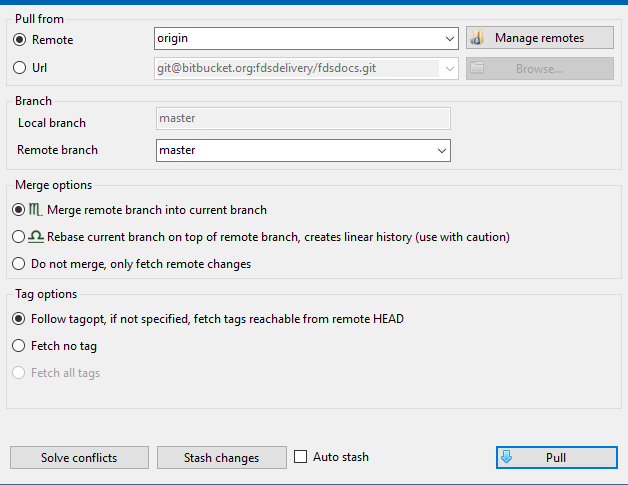

Set up SSH#
Requirements#
- install the latest full version of Git Extenstions
- start command prompt and check that
git --versionshows no error - add a new Windows environment variable:
GIT_SSH = C:\Program Files (x86)\GitExtensions\PuTTY - Add the path of the
PuTTYdirectory to the System PATH variable:C:\Program Files (x86)\GitExtensions\PuTTY
Manage SSH keys on your local Windows machine#
SSH keys are stored locally in %USERPROFILE%/.ssh directory. If it does not exist, create one.
Add a new SSH key via PUTTYGEN#
- Open your command prompt and type
puttygen. This will open the generator screen. - Click
Generateto generate a new key and move your mouse across the white area. - Type in the passphrase (remember it wel!) and save the private key to
%USERPROFILE%\.sshdirectory asid_rsa.ppk.
- Also, save the OpenSSH version of the key as
id_rsafile via the top menuConversions->Export OpenSSH key.
Add a new SSH key via SSH-KEYGEN#
- Alternatively, you can generate the key via
ssh-keygencommand - Save the key as
id_rsafile in.sshdirectory - Open
puttygenand load the generated key - Save the corresponding private key as above for Puttygen
Add config file for SSH#
- In your
.sshdirectory create an emptyconfigtextfile (no extension) - For your remote host, e.g. BitBucket, add the configuration information. It will look something like this:
Host BITBUCKET
Hostname bitbucket.org
User your-user-name-on-bitbucket
PubKeyAuthentication yes
IdentityFile id_rsa
Test the connection#
- run
ssh -T git@bitbucket.org - you may see something like this:
key_load_public: invalid format
Enter passphrase for key '/c/Users/Andre/.ssh/id_rsa':
logged in as Madrusnl.
You can use git or hg to connect to Bitbucket. Shell access is disabled.
- you may ignore the
invalid formaterror if you see the rest - otherwise you can do some troubleshooting:
- use
-vvvoption:ssh -T git@bitbucket.org -vvv - make sure you have registered your PUBLIC key (.pub) on the (BitBucket) server
- make sure your
IdentiyFilevariable in theconfigfile points to your PRIVATE key (without extension).
- use
How to clone the remote private repo via SSH#
- make sure you have the private key for the remote repo in
.sshfolder, e.g.id_rsa.ppk(otherwise create it as described hereabove) - create the local folder to which you wish to clone the remote repo
- initialize the empty git repo in it by
git init - open the repo with Git Extensions
- in its menu, go to
Repository,Remote repositories...and create a new remote repository. Call itorigin(or any other name you like). - Copy the SSH url of the BitBucket repo and paste it in the
Urlfield - For the
PuTTY SSHfield, browse to the private key in.sshdirectory and pick it up
- Click on
Load SSH keyand type in your passphrase for the private key - Test connection with
Test connection - If everything is ok, save changes and close
- Click on the light blue down arrow, choose
Pull, fill in the right remote branch, e.g.masterand chooseMerge remote branch into current branch
 - Click the
Pullbutton - If everything went fine, you should now see the branch tree with all the commits